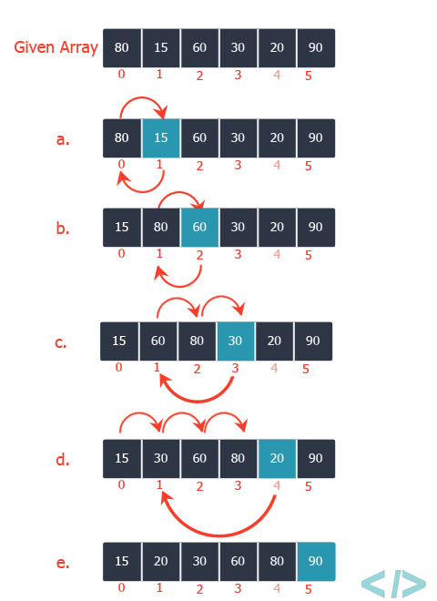
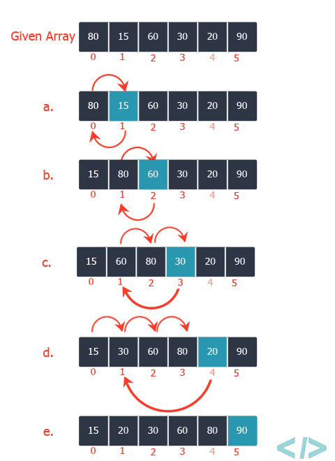
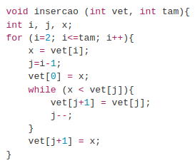

| Representação Gráfica | Animação | Vídeo |
|  |  |
Aluno(s): José Marcos dos Santos, Naiana Cordeiro de Lima e Thiago Yuji Gelinski Ichikawa
Funcionamento:
É um algoritmo de ordenação
Constrói uma matriz final com um elemento por vez.
É bastante eficiente para problemas com pequenas entradas.
Percorre as posições do array, começando com o índice 1(um).
Á medida que avança vai deixando os elementos mais à esquerda ordenados.
| Representação Gráfica | Animação | Vídeo |
|  | |
Vantagens:
Desvantagens:
Implementação:
Referências: